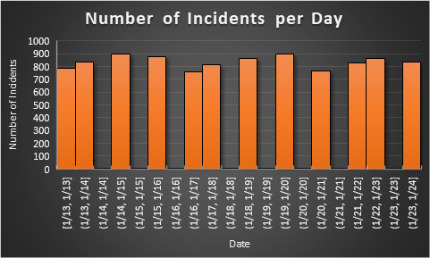
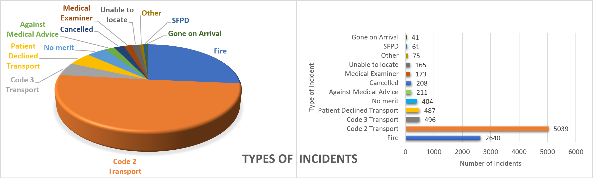
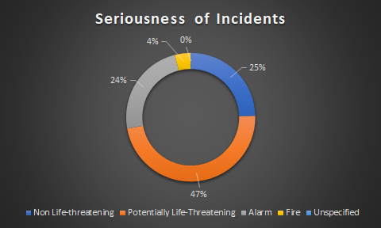

Emergency Calls - Predicting the Future
Emergencies can be very difficult to predict, and require fast responce times to get to those in need. Often times, the severity or type of emergency can be unknown until help arrives on the scene, so every assistance dispatch must have tools and skill to assist every situation. However, personnel are often focussed on dealing with a specific situation, and may not be able to help as effectively as another dispatch. Therefore, predicting what type of assistance is needed can be crucial in saving lives. Below, there are several graphs displaying what incidents occured during one week in January (1/13-1/24) 2018, and when they occured.

As shown in the graph above, which displays the number of recorded accidents in San Fransisco from January 13th to January 24th of this year, hundreds of accidents happen every day. However, they are not on a constant timer. Several trends can be noticed about when accidents specifically tend to occur.
This includes that accidents seem to happen notably more frequently during the weekends (1/13-1/14, 1/19-1/21). One also might note there seem to be notably more accidents due to Martin Luther King Day (1/15), as there is an increase of the number of incidents on that Monday and the following Tuesday.

This graph displays the number of each disposition of incident, as well as a pie chart comparing their percentages. As one can see, most incidents occuring during this week were labeled as Code 2 Transport. The majority of the remaining significantly involved a fire.
An easy assumption is that any incident is likely under the juristiction of a code 2 transport or involves a fire. Yet we can predict even more accurately by running the data of the time and location each incident occured and comparing it to a per-determined time and place. To predict dispatch required, select the city and time of the upcoming incident.

The seriousness of incidents can be an important factor as well. The greater the risk to a citizen's life, the more urgently immediate help is required. The above graph compares the recorded dispositions of the accidents by percentages.
Accidents can be life-threatening, and nothing is more important than saving a life, but knowing when help is needed can impede the struggle to protect citizens. Not to mention, getting help to the outer areas of San Fransisco can take much longer. Many reports for that week in January recorded a response time up to three times longer for reaching people in those outer areas than that for an incidient in the center of the city. Algorithms that can predict incidents, however, may just be able to help keep more people alive and well.